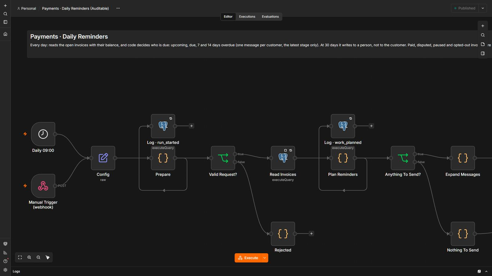
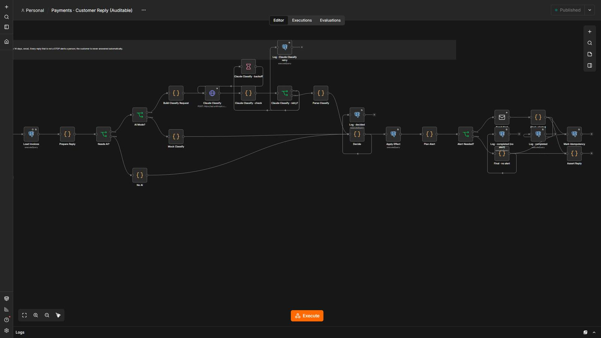
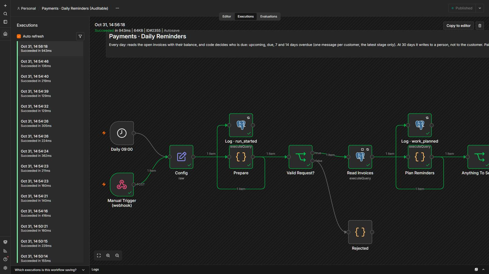

Chase overdue invoices politely, and stop the moment they are paid.
Every day the system checks the open invoices and sends the reminder that is due: friendly before the due date, firmer after, one message per customer. A payment stops the sequence. At 30 days it hands the case to a person. If the customer replies, code reads STOP, the AI only classifies the reply, and nothing is blocked, charged or refunded automatically.
5 steps, and who decides each one.
- Code decides
Record invoices and payments
Both are idempotent. The balance is amount minus paid, always in SQL; two simultaneous payments are never lost.
- Code decides
Decide who is due
Open invoices only, with a balance, no pause, no opt-out, inside the customer’s local sending hours. One message per customer, latest stage only.
- Code decides
Send, then record
Tone grows with the stage and never threatens. A stage counts as sent only after the email went out.
- Code decidesA person
Hand off at 30 days
The last stage writes to a person, not to the customer.
- AI readsCode decides
Read the reply
STOP is read by code. The AI only classifies “already paid / dispute / will pay” with a quote; code verifies it and decides.
3 workflows
Payments · Invoices & Payments
Invoices arrive from accounting and payments from the gateway, both idempotent; the balance is always amount minus paid, and a fully paid invoice stops the reminders.
Step by step
- Validates the invoice (id, email, positive amount, known currency, real due date).
- The same invoice twice is a duplicate; the same id with different data is a conflict that fails loudly and never overwrites.
- A payment is idempotent by its id; the balance is added with one atomic update, so two simultaneous payments are never lost.
- Fully paid means no balance: the sequence stops. An overpayment is flagged to a person and never refunded automatically.
Payments · Daily Reminders
Every day it decides which invoices are due a reminder: friendly before, firm after, and a person at 30 days.
Step by step
- Reads the open invoices with their balance, opt-outs and the stages already sent.
- Code skips paid, disputed, paused and opted-out invoices and waits for the customer’s local sending hours.
- Sends the stage that is due (upcoming, due, 7 and 14 days overdue), one message per customer, never accumulating old stages.
- At 30 days it writes to a person, not to the customer.
- A stage counts as sent only after the email went out.
Payments · Customer Reply
A STOP is read by code; any other reply gets one AI classification that code verifies, and a person is alerted.
Step by step
- Validates the reply; the same message id never runs twice.
- Code reads STOP and unsubscribe before any AI; a text that gives orders to the system never reaches the model.
- The AI only picks an intent (already paid, disputes, will pay) and quotes the phrase; code verifies the quote and the confidence.
- “Already paid” never marks an invoice paid: it pauses for 3 days. A dispute stops the reminders. A promise date is extracted by code (max 14 days, once).
- Everything that is not a STOP alerts a person; the customer is never answered automatically.
The system in n8n.
Screenshots of the actual editor and of a real execution, from the local test environment. Click one to open it full size.





